Сборочный стол
ВерстакСостав: 7 × Железный слиток · Медный слиток · Верстак
Верстак индустрии: собирает многокомпонентные рецепты (сплавы, блоки баз, детали ракет). Всё дерево прогрессии идёт через него.
Все рецепты по фазам
Рецепты сгруппированы по этапам прогрессии, а не по станкам: сверху вниз это порядок, в котором их открываешь. Под каждым предметом сказано, что это и зачем нужно. Наведите курсор или нажмите на иконку, чтобы увидеть название; число в углу слота это количество.
108 из 108 рецептов
Из железа и меди в верстаке собираются четыре станка. С них начинается вся промышленность.
Состав: 7 × Железный слиток · Медный слиток · Верстак
Верстак индустрии: собирает многокомпонентные рецепты (сплавы, блоки баз, детали ракет). Всё дерево прогрессии идёт через него.
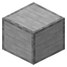
Состав: 4 × Железный слиток · Медный слиток · Кремень · 3 × Гладкий камень
Дробит руду в пыль с удвоением выхода. Дробить, потом плавить пыль выгоднее, чем плавить руду напрямую.
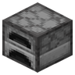
Состав: 7 × Железный слиток · Медный слиток · Печь
Плавит пыль и шихту в слитки быстрее печи. Работает и на любых ванильных печных рецептах.
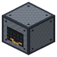
Состав: 3 × Железный слиток · 2 × Медный слиток · Печь · 3 × Гладкий камень
Первый источник энергии: жжёт уголь, пока не построены солнечные панели и РИТЭГи.
Руда в дробилку, пыль в электропечь. Сталь открывает энергетику, герметичность и ракеты.
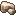
Состав: Рудное железо
Промежуток дробления. В электропечи плавится в железный слиток.
Состав: Метеоритное железо
Промежуток дробления. В электропечи плавится в железный слиток.
Метеоритное железо дробится в тройную порцию.
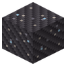
Состав: Астероидный камень
Пыль титановой руды. В печи плавится в титановый слиток для сплава и корпусов.
Астероидный камень: единственная пыль титана вне Луны.
Состав: Необработанный титан
Пыль титановой руды. В печи плавится в титановый слиток для сплава и корпусов.
Состав: Необработанный вольфрам
Пыль вольфрама. В печи плавится в слиток для сопел двигателей и ломов пушки.
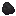
Состав: Уголь
Из угля. Идёт в стальную шихту и в углеволокно.
Состав: Железная пыль · 2 × Угольная пыль
Шихта стали: железная пыль плюс угольная. В печи плавится в стальной слиток.
Состав: Железная пыль
База механизмов. Дробление даёт вдвое больше через пыль.
Состав: Метеоритное железо
База механизмов. Дробление даёт вдвое больше через пыль.
Состав: Стальная шихта
Рабочий металл мода: корпуса, кабели, детали. Открывает почти всё.
Состав: Титановая пыль
Лёгкий прочный металл. Сырьё для титанового сплава.
Состав: Вольфрамовая пыль
Тугоплавкий тяжёлый металл: сопла двигателей, боеприпас пушки, РИТЭГ.
Состав: 2 × Титановый слиток · Стальной слиток
Титан плюс сталь: лёгкий силовой материал для баков, командного модуля, капсулы.
Состав: 4 × Угольная пыль
Прессованная угольная пыль: лёгкая обшивка и композит скафандра.
Кабели связывают генераторы и потребителей. Батареи буферизуют, РИТЭГ питает теневую сторону.
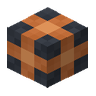
Состав: 2 × Медный слиток · Стальной слиток
Соединяет генераторы, хранилища и станки в одну сеть.
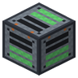
Состав: 2 × Медный слиток · Стальной слиток · Редстоуновая пыль
Буфер энергии на 100k. Несколько в сети выравнивают заряд между собой, без бесконечной перекачки.
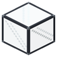
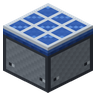
Состав: 2 × Медный слиток · Герметичное стекло · Стальной слиток
Дневная энергия. В вакууме мощнее в 1.5 раза: нет атмосферного ослабления.
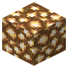
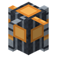
Состав: 2 × Стальной слиток · Вольфрамовый слиток · Светокамень
Слабый, но вечный источник для теневой стороны станций и дальних баз.
Замкнутый объём под давлением, скафандр, приборы контроля утечек и провиант.
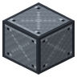
Состав: 2 × Стальной слиток
Герметичная обшивка базы. Держит давление, если полость замкнута без щелей.
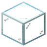
Состав: Стальной слиток · 3 × Стекло
Прозрачная герметичная панель: окна баз и куполов без потери давления.
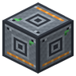
Состав: 2 × Стальной слиток · 2 × Медный слиток · Герметичное стекло
Сердце базы: заливает воздухом замкнутый объём (26 направлений), тратит энергию. Диагональная щель считается утечкой.
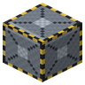
Состав: 2 × Стальной слиток · Железный слиток
Дверь шлюза с интерлоком: два люка рядом не откроются разом. Управляется рукой или редстоуном.
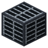
Состав: Стальной слиток · 2 × Железные прутья
Выглядит цельным блоком, но пропускает газ: вентшахты и фальшполы без разгерметизации.
Состав: Стальной слиток · Редстоуновая пыль · Герметичное стекло · Медный слиток
Указывает на пробоину: луч частиц к ближайшей точке утечки плюс координаты. Спасение на большой базе.
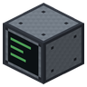
Состав: Стальной слиток · Герметичное стекло · Редстоуновая пыль · Медный слиток
Настенная панель: лицо светится зелёным при герметичности и красным при утечке. ПКМ даёт подробный отчёт.
Состав: Герметичное стекло · Стальной слиток
Дыхание в вакууме. Носится в слоте шлема, расходует баллоны.
Состав: 2 × Стальной слиток · Герметичное стекло
Запас кислорода для маски. Прочность равна запасу; заряжается в электролизёре.
Состав: 2 × Углепластик · Слиток титанового сплава · Герметичное стекло
Торс скафандра. Полный сет (торс, штаны, ботинки) защищает от среды сверх дыхания.
Состав: 2 × Углепластик · Стальной слиток
Штаны скафандра. Часть комплекта защиты от холода и радиации на поверхности.
Состав: Углепластик · Стальной слиток
Ботинки скафандра. Замыкают комплект защиты от среды.
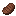
Состав: Пустая консервная банка · 2 × Стейк
Сытный паёк для дальних миссий. Всегда съедобен, после еды остаётся пустая банка.
Состав: 7 × Медный слиток
Тара для пайков. Возвращается после еды, выбрасывать нечего.
Перегонка сланца в керолокс, баки и заправка ракеты.
Состав: 2 × Стальной слиток · Медный слиток · Железный слиток · Герметичное стекло
Перегоняет нефтеносный сланец в керолокс. Побочно даёт серу.
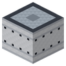
Состав: 2 × Слиток титанового сплава · Стальной слиток · Углепластик
Бак ракеты. Реально хранит топливо; из него сборка читает заправку.
Состав: Стальной слиток · Кожа · Медный слиток
Переносная магистраль бак-ракета: закачка и слив топлива вручную.
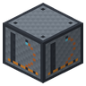
Состав: 2 × Стальной слиток · Медный слиток · Заправочный рукав
Заправочная колонна: сама качает топливо в припаркованную ракету в зоне действия.
Двигатели, баки, командный модуль, стартовый комплекс с площадкой и пилоном.
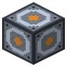
Состав: 2 × Стальной слиток · Слиток титанового сплава · Медный слиток
Гиродин: компенсирует крутящий момент, стабилизирует ракету и отрабатывает наклон по WASD. Без него ракета не управляется.
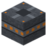
Состав: 2 × Стальной слиток · Слиток титанового сплава · Порох
Разделитель ступеней: пироболтовое кольцо, задаёт плоскость отделения. Выгоревшая ступень сбрасывается клавишей X или автопилотом и падает честным объектом.
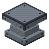
Состав: 2 × Вольфрамовый слиток · 2 × Стальной слиток · Слиток титанового сплава
Керолоксовый двигатель: высокая тяга, топливо старта с Земли.
Кустарный рецепт: двигатель получает качество 0.5.
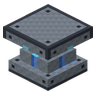
Состав: 2 × Слиток титанового сплава · Вольфрамовый слиток · Стальной слиток · Углепластик
Гидролоксовый двигатель: высокий удельный импульс, слабее тяга. Для вакуума и Луны.
Кустарный рецепт: двигатель получает качество 0.5.
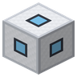
Состав: Слиток титанового сплава · Герметичное стекло · Углепластик · Стальной слиток
Пост управления и точка сборки ракеты. Место пилота.
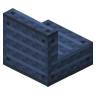
Состав: Стальной слиток · 2 × Кожа
Кресло для пассажиров сверх пилота.
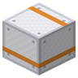
Состав: 2 × Слиток титанового сплава · Углепластик
Лёгкая силовая обшивка ракеты.
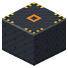
Состав: 2 × Стальной слиток · Гладкий камень
Плита стартовой площадки. Прямоугольник плит задаёт площадь сборки.
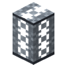
Состав: 3 × Стальной слиток
Колонна у площадки: задаёт высоту ракеты. ПКМ даёт скан-отчёт, Sneak+ПКМ собирает.
Электролиз льда в гидролокс и кислород: топливо для возврата добывается на месте.
Состав: 2 × Стальной слиток · 2 × Медный слиток · Герметичное стекло
Разлагает лёд на гидролокс и кислород. Основа ISRU на Луне.
Стыковка ступеней, беспилотные рейсы, грузовые перевозки, возврат домой.
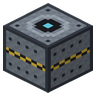
Состав: 2 × Стальной слиток · Слиток титанового сплава · Редстоуновая пыль
Плоскость разделения ступеней: расстыковка носителя и лендера, обратная стыковка захватом.
Состав: 4 × Метеоритное железо · 2 × Углепластик
Абляционный экран из метеоритного железа. Метеоритное железо есть только в поясе астероидов, поэтому возвратная капсула это уже поздняя игра.
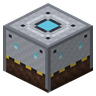
Состав: 2 × Слиток титанового сплава · Титановый слиток · Теплозащитный экран · Герметичное стекло
Титановый спасательный пост с теплозащитным экраном: держит посадку до 25 м/с.
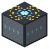
Состав: 2 × Стальной слиток · Редстоуновая пыль · Светокаменная пыль
Точка прибытия полётной программы для беспилотных рейсов.
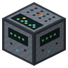
Состав: 2 × Стальной слиток · Медный слиток · Редстоуновая пыль · Герметичное стекло
Пульт ЦУП: телеметрия всех бортов в радиусе (статус, топливо, высота).
Состав: 2 × Бумага · Редстоуновая пыль · Стальной слиток
Носитель маршрута: цель плюс посадочный маяк. Загружается в борт для автопилота.
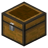
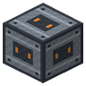
Состав: 2 × Стальной слиток · Слиток титанового сплава · Сундук
Грузовой отсек ракеты на 15 слотов. Хопперы и погрузчик работают с ним напрямую.
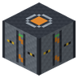
Состав: 2 × Стальной слиток · Воронка · Медный слиток
Автопогрузка и разгрузка припаркованного борта из соседних контейнеров.
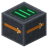
Состав: 2 × Стальной слиток · Медный слиток · Полётная программа
Автомат грузовой линии: хранит программу, ждёт, пока погрузчики и колонки затихнут, проверяет бюджет Δv, окно и покрытие и отправляет беспилотный борт.
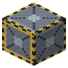
Состав: 2 × Стальной слиток · Герметичный люк · Стыковочный узел
Герметичный люк с направлением. Sneak+ПКМ: припаркованный пустой борт у передней грани становится модулем станции (wet workshop).
Вольфрамовый лом и кинетический удар по честной баллистике входа.
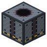
Состав: 4 × Вольфрамовый слиток · 3 × Стальной слиток · 2 × Слиток титанового сплава
Орбитальное кинетическое орудие. Работает только на орбите, бьёт вольфрамовым ломом; со спутниковым покрытием цели наводится в блок, без него рассеивается.
Состав: 3 × Вольфрамовый слиток · Стальной слиток
Боеприпас пушки. Кратер считается из кинетической энергии удара.
Состав: Стальной слиток · 2 × Редстоуновая пыль · Герметичное стекло · Эндер-жемчуг
Пульт наведения: метит цель на поверхности, привязывается к пушке, стреляет дистанционно.
Красная планета: тонкая CO2-атмосфера, метанокс из сборщика и реактора Сабатье, перелёт в окне Гомана.
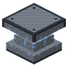
Состав: 2 × Слиток титанового сплава · Вольфрамовый слиток · Стальной слиток · Углепластик
Метанокислородный двигатель: середина между керолоксом и гидролоксом. Топливо добывается на Марсе.
Кустарный рецепт: двигатель получает качество 0.5.
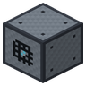
Состав: 2 × Стальной слиток · Железные прутья · Медный слиток · Герметичное стекло
Сжимает CO2 из атмосферы измерения. Быстро на Марсе, медленно на Земле, никак в вакууме.
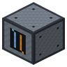
Состав: Стальной слиток · Слиток титанового сплава · 2 × Медный слиток · Герметичное стекло
Реакция Сабатье: CO2 из сборщика плюс лёд дают метанокс в соседние баки. ISRU-топливо Марса.
Спутниковое покрытие для беспилотной логистики и защищённые каналы связи: шифруй маяки или теряй груз.
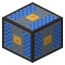
Состав: Стальной слиток · 3 × Солнечная панель · Слиток титанового сплава
Энергоспутник: разворачивается на орбите и питает наземные ректенны при чистом небе.
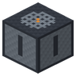
Состав: 2 × Стальной слиток · Железные прутья · 2 × Медный слиток
Ректенна: принимает энергию с орбитальных энергоспутников. Пассивная мощность независимо от дня.
Состав: Стальной слиток · 2 × Солнечная панель · Редстоуновая пыль · Герметичное стекло
Полезная нагрузка ракеты. На орбите разворачивается в узел связи: покрытие нужно для беспилотных межпланетных рейсов и наводит ломы орудия.
Состав: 2 × Стальной слиток · Железные прутья · Редстоуновая пыль · Герметичное стекло · Око Эндера
Тарелка-перехватчик: уводит груз с открытого (незашифрованного) канала на свою площадку. Основа PvP-логистики.
Состав: Золотой слиток · Редстоуновая пыль · Стальной слиток
Ключ связи: прошивается в ЦУПе, шифрует маяк своим каналом и настраивает перехватчик. Защита от угона груза.
Мультиблоки Луны: реголитовый реактор даёт кислород без льда, электромагнитная катапульта поднимает груз на орбиту без топлива, ловушка масс принимает его на платформе.
Состав: 2 × Стальной слиток · Слиток титанового сплава · Редстоуновый компаратор · Грузовой отсек
Казённик электромагнитной катапульты: капсула + 26 слотов груза. Рельс — прямая линия катушек от передней грани, v = √(2·Σaᵢ·Lᵢ); выстрел забирает ½mv²/η из конденсаторов. Только в вакууме.
Состав: 3 × Медный слиток · Стальной слиток
Секция рельса тира 1: предельное ускорение 1000 g. До орбиты Земли с Луны — 323 секции.
Состав: Секция стальных катушек · 2 × Вольфрамовый слиток · Слиток титанового сплава · Лунный лёд
Секция рельса тира 2: 3000 g, криостат на лунном льду. До орбиты Земли с Луны — 108 секций.
Состав: Аккумулятор · 2 × Медный слиток · Углепластик
Конденсатор батареи катапульты: 250 000 E, заряд 2000 E/т. Группа, касающаяся казённика, разряжается при выстреле.
Состав: 3 × Слиток титанового сплава · Теплозащитный экран
Многоразовая грузовая капсула катапульты: 100 кг сухой массы плюс 2 кг на предмет груза. Возвращается ловушкой.
Состав: 3 × Стальной слиток · Грузовой отсек · Гиродин
Ловушка масс на орбитальной платформе: принимает капсулы катапульты. Точность прибытия — от спутникового покрытия.
Состав: Углепластик · 2 × Стальной слиток
Сетка-уловитель вокруг ловушки: радиус захвата 1.5 + 0.6·√(секций), до 12 блоков.
Состав: 2 × Вольфрамовый слиток · Плавильная печь · Герметичное стекло
Контроллер мультиблока 3×3×3: электролиз расплава реголита даёт O₂ в баллоны, железную и титановую пыль и шлак. Энергия — через любой блок оболочки.
Состав: 2 × Лунный кирпич · Вольфрамовый слиток
Огнеупорная футеровка оболочки реголитового реактора.
Состав: Лунный реголит
Спечённый реголит: плотный герметичный блок обваловки, держит удар лучше камня.
Реголит спекается напрямую.
Состав: Шлак
Спечённый реголит: плотный герметичный блок обваловки, держит удар лучше камня.
Шлак реголитового реактора спекается в тот же блок.
Состав: 4 × Лунный камень
Лунный кирпич из лунного камня: строительный блок и сырьё футеровки.
Валы, шестерни и станки на честной механике P = τ·ω; детали двигателя с допусками; инженерный молот и мультиблоки электролизного стека и ректификационной колонны.
Состав: Турбонасос · Форсуночная головка · Регенеративно охлаждаемое сопло · Вольфрамовый слиток · Стальной слиток
Керолоксовый двигатель: высокая тяга, топливо старта с Земли.
Точная сборка из деталей: качество двигателя по трём деталям, при q = 1 это +1.6 % Isp и +5.9 % тяги.
Состав: Турбонасос · Форсуночная головка · Регенеративно охлаждаемое сопло · Слиток титанового сплава · Углепластик
Гидролоксовый двигатель: высокий удельный импульс, слабее тяга. Для вакуума и Луны.
Точная сборка из деталей: качество двигателя по трём деталям, при q = 1 это +1.6 % Isp и +5.9 % тяги.
Состав: Турбонасос · Форсуночная головка · Регенеративно охлаждаемое сопло · Слиток титанового сплава · Вольфрамовый слиток
Метанокислородный двигатель: середина между керолоксом и гидролоксом. Топливо добывается на Марсе.
Точная сборка из деталей: качество двигателя по трём деталям, при q = 1 это +1.6 % Isp и +5.9 % тяги.
Состав: 3 × Палка
Дешёвый вал первой трансмиссии. Держит 24.5 кН·м: передавайте мощность на высоких оборотах, иначе срежется.
Состав: 2 × Стальной слиток
Стальной вал: предел кручения 706 кН·м. Основа любой серьёзной трансмиссии.
Состав: Стальной слиток · Стальной вал
Малая шестерня: две соседние сцепляются 1:1 с реверсом, с большой по диагонали дают 2:1. Зацепление теряет 2 %.
Состав: Малая шестерня · 2 × Стальной слиток
Большая шестерня: с малой по диагонали меняет скорость на момент в отношении 2:1.
Состав: 2 × Малая шестерня · 2 × Стальной слиток
Угловой редуктор: поворачивает вращение на любую грань.
Состав: 2 × Стальной вал · Стальной слиток · Редстоуновая пыль · Углепластик
Фрикционная муфта: размыкает сеть по редстоуну и срабатывает как предохранитель при перегрузке по моменту.
Состав: 2 × Медный слиток · Стальной слиток · Стальной вал · Редстоуновая пыль
Мотор-генератор: мост между энергосетью и механикой. 300 кВт при 750 об/мин; если сеть крутит его быстрее холостого хода, отдаёт энергию обратно.
Состав: 4 × Стальной слиток · Стальной вал
Маховик 385 кг·м²: запасает ½Iω² и сглаживает просадку оборотов от ударов пресса. Выше 6700 об/мин разрывается.
Состав: 2 × Стальной слиток · Стальной вал · Поршень · Железный блок
Механический пресс от вала: штампует листы при 60–600 об/мин. Удар 50 кДж за 0.2 с заметно просаживает обороты.
Состав: 2 × Стальной слиток · Стальной вал · Вольфрамовый слиток · Гладкий камень
Токарный станок от вала: обтачивает заготовки деталей двигателя при 300–1200 об/мин. Время операции = энергия резания / мощность.
Состав: Стальной слиток
Стальной лист из пресса: полуфабрикат корпусов и деталей.
Состав: Медный слиток
Медный лист: заготовка форсуночной головки и регенеративного сопла.
Состав: Слиток титанового сплава
Лист титанового сплава из пресса.
Состав: Слиток титанового сплава → Турбонасос (в работе) → Турбонасос
Турбонасос: итог цепочки токарных и прессовых операций. Его качество входит в КПД насоса двигателя.
Состав: Медный лист → Форсуночная головка (в работе) → Форсуночная головка
Форсуночная головка: качество смешения влияет на полноту сгорания и удельный импульс.
Состав: Медный лист → Регенеративное сопло (в работе) → Регенеративно охлаждаемое сопло
Регенеративно охлаждаемое сопло: точность профиля определяет КПД сопла.
Состав: 2 × Железный слиток · 3 × Палка
Инженерный молот: удар по ключевому блоку формирует мультиблок или называет первую неверную клетку.
Состав: Книга · Железный слиток
Руководство инженера: механика и каждый мультиблок по слоям со списком материалов.
Состав: 2 × Стальной лист · Медный слиток · Герметичное стекло
Ячейка электролизного стека: ставится в линию за электролизёром, 1–15 штук. Каждая ячейка добавляет порцию льда за цикл.
Состав: 3 × Стальной лист
Ректификационная тарелка: столб из 4–16 штук над перегонным кубом. Больше ступеней разделения, больше керолокса со сланца.
Состав: Стальной вал · 2 × Стальной слиток · Малая шестерня
Ступица ветроколеса: с парусами снимает мощность ветра, которая растёт с радиусом колеса и плотностью воздуха.
Состав: 3 × Шерсть любого цвета · 3 × Палка
Парус ветроколеса: крепится к ступице и увеличивает радиус ометаемой площади.
Ничего не найдено. Попробуйте другое слово или сбросьте фильтр станка.